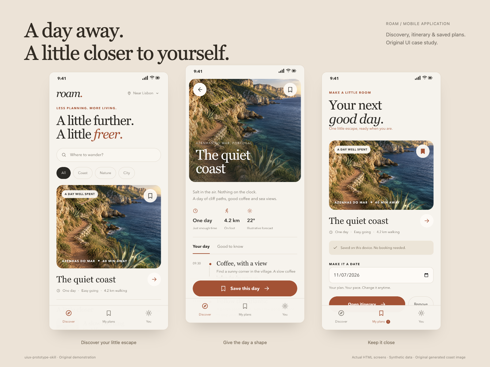
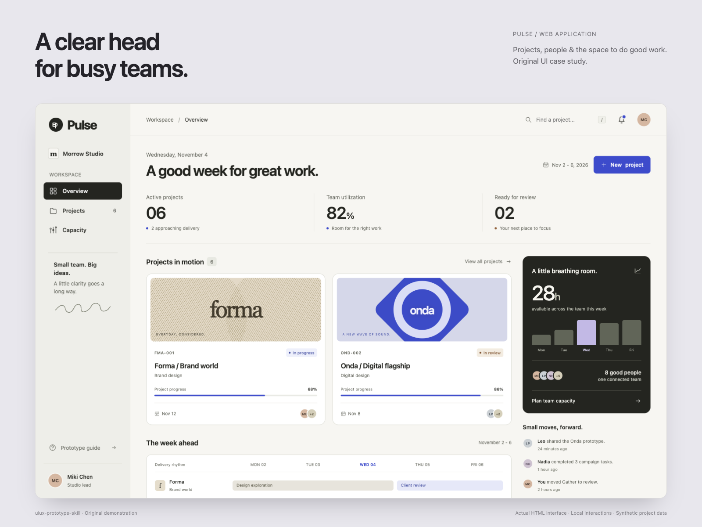
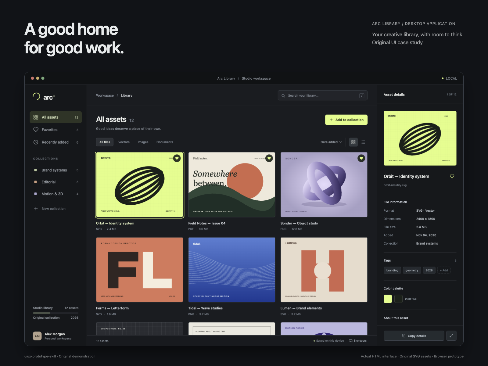

Roam
Mobile daytrip planner
Discover nearby escapes, inspect an itinerary, save a plan and recover from an empty search.
Original product UI prototypes, from reference research and a chosen direction to working local interactions and a shared design system.

Mobile daytrip planner
Discover nearby escapes, inspect an itinerary, save a plan and recover from an empty search.

Web studio workspace
Review projects and capacity, filter work, create a project with validation, and inspect milestones.

Desktop asset organizer
Browse original assets, search and filter, switch views, inspect metadata and preview with the keyboard.